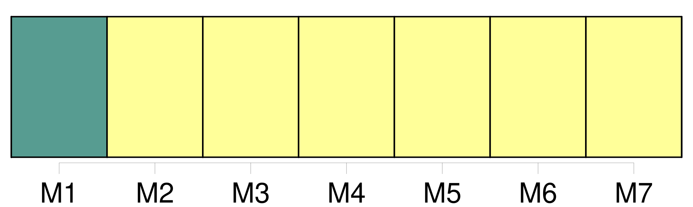
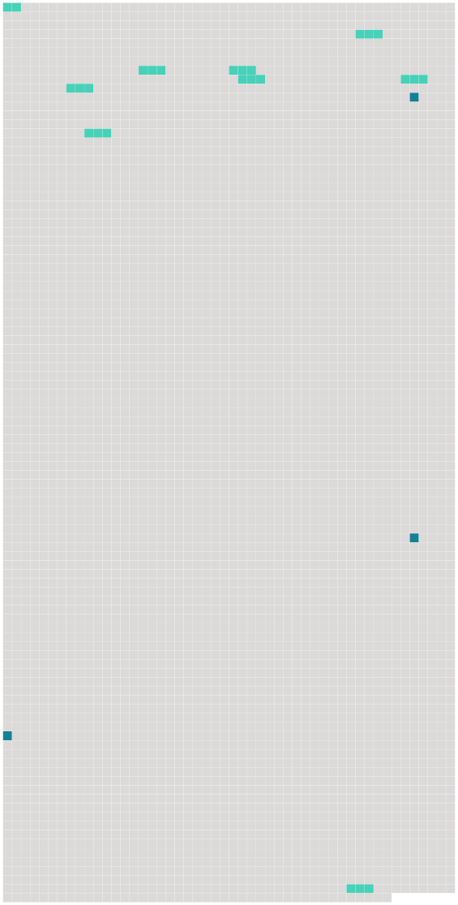

Longueur nb maillons : 12 mentions |
  |
[Article 23] [5 phrases] Toutefois, les États qui ne sont pas membres du Fonds monétaire international et dont la législation ne permet pas d'appliquer les dispositions du paragraphe 1 [du présent article] , peuvent, au moment de la ratification ou de l'adhésion, ou à tout moment par la suite, déclarer que la limite de responsabilité du transporteur prescrite à l'article 21 est fixée, dans les procédures judiciaires sur leur territoire, à la somme de 1500000 unités monétaires par passager ; 62500 unités monétaires par passager pour ce qui concerne le paragraphe 1 de l'article 22 ; 15000 unités monétaires par passager pour ce qui concerne le paragraphe 2 de l'article 22 ; et 250 unités monétaires par kilogramme pour ce qui concerne le paragraphe 3 de l'article 22. [4 phrases] Le calcul mentionné dans la dernière phrase du paragraphe 1 [du présent article] et la conversion mentionnée au paragraphe 2 [du présent article] sont effectués de façon à exprimer en monnaie nationale de l'État partie la même valeur réelle, dans la mesure du possible, pour les montants prévus aux articles 21 et 22, que celle qui découlerait de l'application des trois premières phrases du paragraphe 1 [du présent article]
Les États parties communiquent au dépositaire leur méthode de calcul conformément au paragraphe 1 [du présent article] ou les résultats de la conversion conformément au paragraphe 2 [du présent article] , selon le cas, lors du dépôt de leur instrument de ratification, d'acceptation ou d'approbation de la présente convention ou d'adhésion à celle -ci et chaque fois qu'un changement se produit dans cette méthode de calcul ou dans ces résultats. [1 phrases] Sans préjudice des dispositions de l'article 25 de la présente convention et sous réserve du paragraphe 2 ci-dessous, les limites de responsabilité prescrites aux articles 21, 22 et [23] sont révisées par le dépositaire tous les cinq ans, la première révision intervenant à la fin de la cinquième année suivant la date d'entrée en vigueur de la présente convention, ou si la convention n'entre pas en vigueur dans les cinq ans qui suivent la date à laquelle elle est pour la première fois ouverte à la signature, dans l'année de son entrée en vigueur, moyennant l'application d'un coefficient pour inflation correspondant au taux cumulatif de l'inflation depuis la révision précédente ou, dans le cas d'une première révision, depuis la date d'entrée en vigueur de la convention.
La mesure du taux d'inflation à utiliser pour déterminer le coefficient pour inflation est la moyenne pondérée des taux annuels de la hausse ou de la baisse des indices de prix à la consommation des États dont les monnaies composent le droit de tirage spécial cité au paragraphe 1 de [l'article 23] [72 phrases] Toutefois, aucun de ces actes ou omissions ne pourra soumettre le transporteur de fait à une responsabilité dépassant les montants prévus aux articles 21, 22, [23] et 24. [21 phrases] Sauf au paragraphe 2 de l'article 1, au paragraphe 1, alinéa b ), de l'article 3, à l'alinéa b ) de l'article 5, aux articles [23] , 33, 46 et à l'alinéa b ) de l'article 57, toute mention faite d'un " État partie " ou " d'États parties " s'applique également aux organisations régionales d'intégration économique. [24 phrases]
Dans le cas d'un État partie qui a fait une telle déclaration : |
 |
La ressource peut être téléchargée sur la page Ortolang
Si vous avez des questions ou vous voyez des erreurs, merci d'envoyer un mail à silvia.federzoni89@gmail.com
Site développé par S. Federzoni (contact)